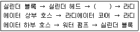
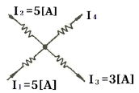

농기계정비기능사 (2013-04-14 기출문제)
1과목: 농기계정비
1. 다음 중 경운기의 조향 클러치를 나타내는 말이 아닌 것은?
- 맞물림 클러치
- 도그(dog) 클러치
- 사이드(side) 클러치
- 마찰 클러치
(정답률: 55%)

2. 승용 트랙터 토인측정 전 준비 작업에서 맞지 않는 것은?
- 적차 상태에서 측정한다.
- 타이어 공기압력을 규정 압력으로 한다.
- 조향장치 각부 볼 조인트와 링키지의 마모를 점검한다.
- 앞바퀴 베어링 유격을 점검하고, 필요 시 허브 너트를 조여 수정한다.
(정답률: 82%)
3. 디젤기관과 가솔린기관을 비교하였을 때 옳은 것은?
- 디젤기관의 압축비가 더 낮다.
- 가솔린기관의 소음이 더 심하다.
- 디젤기관의 열효율이 더 높다.
- 같은 출력일 때 가솔린 기관이 더 무겁다.
(정답률: 71%)
4. 트랙터에서 변속기어의 요구특성으로 틀 수 없는 것은?
- 높은 응력에 견딤
- 압축 계면응력에 견딤
- 피로저항이 작음
- 표면경도가 높음
(정답률: 66%)
5. 클러치 분해 점검사항이 아닌 것은?
- 런 아웃
- 마멸상태
- 스프링장력
- 자재이음
(정답률: 58%)
6. 바퀴형 트랙터의 동력전달 순서를 올바르게 나열한 것은?
- 엔진 - 주행변속장치 - 주 클러치 - 최종감속장치(차동장치포함) - 차축
- 엔진 - 주 클러치 - 주행변속장치 - 차축 - 최종감속장치(차동장치포함)
- 엔진 - 주 클러치 - 주행변속장치 - 최종감속장치(차동장치포함) - 차축
- 엔진 - 주행변속장치 - 주 클러치 - 차축 - 최종감속장치(차동장치포함)
(정답률: 67%)
7. 다음 중 농용트랙터에서 작업기의 부착장치와 관련이 없는 것은?
- 상부링크
- 하부링크
- 리프팅로드
- 드래그 링크
(정답률: 59%)
8. 보행관리기로 비닐피복 작업을 할 때 배토판은 디스크 차륜보다 몇 ㎜ 위쪽에 오도록 조정하는가?
- 10㎜
- 20㎜
- 30㎜
- 40㎜
(정답률: 44%)
9. 비중이 0.72, 발열량이 1⑤00kcal/kg인 연료를 사용하여 20분간 사용하였더니 연료소비량이 5ℓ였다. 이 기관의 연료마력(HP)은?
- 80HP
- 180HP
- 280HP
- 380HP
(정답률: 63%)
10. 일반적으로 트랙터 차동잠금장치를 사용하지 않는 경우는?
- 진흙 포장 작업할 때
- 일반 도로 주행할 때
- 한쪽 구동륜에서 슬립이 발생할 때
- 한쪽 구동륜의 추진력이 약해 움직일 수 없을 때
(정답률: 75%)
11. 경운작업은 토양을 작물이 생육하는 데 알맞은 상태로 만들어 주기 위한 것이다. 다음의 설명 중 경운작업의 목적과 효과에 부합되지 않는 것은?
- 종자의 파종이나 모종을 이식하기 위한 묘상을 준비한다.
- 토양의 구조와 성질을 개량하여 물과 공기의 보유량을 늘려 준다.
- 잡초의 발생과 생육을 억제시킨다.
- 토양을 단단하게 하여 잡초 뿌리의 성장을 억제한다.
(정답률: 77%)
12. 피스톤의 구비조건으로 적당한 것은 무엇인가?
- 열전도가 되지 않을 것
- 열팽창률이 많을 것
- 고온 고압에 잘 견딜 것
- 중량이 무거울 것
(정답률: 85%)
13. 농용 트랙터 동력 취출 축의 구동방식이 아닌 것은?
- 변속기 구동형
- 상시 회전형
- 위치 제어형
- 독립형
(정답률: 43%)
14. 트랙터 유압 펌프에 주로 사용되는 것은?
- 기어 펌프
- 플린져 펌프
- 피스톤 펌프
- 진공 펌프
(정답률: 63%)
15. 밸브의 편 마모 방지를 위한 내용으로 가장 옳은 것은?
- 밸브와 로커암의 틈새가 적을 때
- 밸브와 로커암의 틈새가 클 때
- 밸브 스프링 장력이 클 때
- 밸브 태핏에 옵셋 효과가 일어날 때
(정답률: 44%)
16. 보행이앙기에서 사용되는 묘취구 게이지는 어떠한 조절을 할 때 사용하는가?
- 심음 폭
- 심음 깊이
- 가로 이송량
- 세로 이송량
(정답률: 40%)
17. 동력분무기에서 공기의 팽창성과 압축성을 이용하여 노즐로 배출되는 약액의 양을 일정하게 유지시켜 주는 장치는?
- 플런저
- 공기실
- 노즐 핸들
- 압력조절장치
(정답률: 44%)
18. 피스톤링의 플러터(flutter) 현상에 관한 설명 중 틀린 것은?
- 피스톤의 작동위치 변화에 따른 링의 떨림 현상이다.
- 피스톤 온도가 낮아진다.
- 실린더 벽의 마모를 초래한다.
- 블로바이 가스(blow-by gas) 증가로 인한 엔진출력이 감소한다.
(정답률: 59%)
19. 국내에서 주로 사용되고 있는 원판쟁기에 대한 설명으로 틀린 것은?
- 트랙터 견인 구동형이며, 트랙터 3점 링크 부착형이 많다.
- 1차 경운과 2차 경운에 주로 사용한다.
- 습지경운에 적합하다.
- 단열형과 2차 경운에 주로 사용한다.
(정답률: 58%)
20. 다음 중 순환식 곡물건조기의 주요 구성 요소가 아닌 것은?
- 건조실
- 응축기
- 템퍼링실
- 송풍기
(정답률: 77%)
2과목: 농기계전기
21. 우리나라에서 일반적으로 사용하고 있는 동력경운기 변속기는 어떠한 형식을 사용하고 있는가?
- 선택 미끄럼 기어 물림식
- 선택 유성치차 물림식
- 기어 동기 물림식
- 유체 컨버터 물림식
(정답률: 54%)
22. 기관에서 커넥팅로드를 구성하는 요소가 아닌 것은?
- 소단부
- 헤드부
- 대단부
- 생크(shank)부
(정답률: 43%)
23. 5HP는 약 몇 W인가?
- 3730
- 4850
- 746
- 2239
(정답률: 48%)
24. 동력경운기의 제동장치에 관한 설명으로 틀린 것은?
- 마찰력으로 제동된다.
- 내부 확장식 브레이크이다.
- 브레이크와 주 클러치는 레버가 다르다.
- 브레이크 드럼에는 오일이 채워져 있다.
(정답률: 65%)
25. 브레이크 재료의 구비 조건은?(오류 신고가 접수된 문제입니다. 반드시 정답과 해설을 확인하시기 바랍니다.)
- 마찰계수가 클 것
- 내열성이 클 것
- 제동효과가 클 것
- 마멸성이 클 것
(정답률: 53%)
26. 콤바인의 급치와 수망의 간극이 기준치 이상 넓어 졌을 때 나타나는 현상은?
- 미탈곡으로 인한 손실 증가
- 낟알손상 증가
- 수망손상 증가
- 급치손상 증가
(정답률: 75%)
27. 동력 경운기의 동력전달 체계가 올바른 것은?
- 엔진→주축 케이스→주 클러치→조향장치→변속장치→차축
- 엔진→주축 케이스→조향장치→변속장치→차축
- 엔진→주 클러치→변속장치→조향장치→차축
- 엔진→주 클러치→조향장치→변속장치→차축
(정답률: 61%)
28. 가솔린기관의 총 배기량이 1200㏄이고, 연소실 체적이 200㏄이라며, 이 기관의 압축비는 얼마인가?
- 7 : 1
- 8 : 1
- 9 : 1
- 10 : 1
(정답률: 47%)
29. 내연기관에서 오일희석(dilution)현상이 발생하는 원인이 아닌 것은?
- 시동불량
- 쵸크 밸브를 닫지 않을 때
- 연료의 기화 불량
- 고속으로 장시간 운전
(정답률: 58%)
30. 아래 보기는 기관의 수냉식 냉각장치에서 냉각수의 흐름을 나타낸 것이다. 괄호 안에 해당되는 것은?

- 점화 플러그
- 수온 조절기
- 연료분사 노즐
- 실린더 헤드 커버
(정답률: 64%)
31. 시동전동기의 극수는 브러시 수의 몇 배인가?
- 1
- 2
- 3
- 1/2
(정답률: 33%)
32. 동일한 저항을 가진 두 개의 도선을 병렬로 연결할 때의 합성저항은?
- 한 도선 저항과 같다.
- 한 도선 저항 2배로 된다.
- 한 도선 저항 1/2로 된다.
- 한 도선 저항 2/3로 된다.
(정답률: 65%)
33. 3상 유도전동기의 출력을 나타낸 것은?
- 출력[kW] = √3/1000×전압×저항×역률×효율
- 출력[kW] = √3/1000×전류×저항×역률×효율
- 출력[kW] = √3/1000×전압×전류×역률×효율
- 출력[kW] = √3/1000×전력×저항×역률×효율
(정답률: 64%)
34. DC 발전기의 전기자에 발생된 전류는?
- 직류
- 맥류
- 분류
- 교류
(정답률: 53%)
35. 그로울러테스터로 점검할 수 있는 시험으로 옳지 않은 것은?
- 단락시험
- 단선시험
- 부하시험
- 접지시험
(정답률: 54%)
36. 축전지의 용량은 무엇에 따라 결정되는가?
- 극판의 크기, 극판의 수 및 전해액의 양
- 극판의 수, 극판의 크기 및 셀의 수
- 극판의 수, 진해액의 비중 및 셀의 수
- 극판의 수, 셀의 수 및 발전기의 충전능력
(정답률: 50%)
37. 전기 물리량 측정의 단위가 잘못 연결된 것은?
- 전류 : [A]
- 전압 : [V]
- 저항 : [Ω]
- 전력 : [Wh]
(정답률: 75%)
38. 충전회로에서 레귤레이터의 주 역할은?
- 교류를 고전압으로 바꾸어 준다.
- 직류를 교류로 바꾸어 준다.
- 기관의 동력으로부터 교류 전류를 발생시킨다.
- 충전에 필요한 일정한 전압을 유지시켜 준다.
(정답률: 74%)
39. 다실린더 기관의 점화장치 중에서 순간적으로 10000[V] 정도 이상의 높은 전압을 유기하는 것은?
- 1차코일
- 2차코일
- 콘덴서
- 축전지
(정답률: 42%)
40. 그림에서 I4의 전류값은?

- 7[A]
- 5[A]
- 4[A]
- 2[A]
(정답률: 59%)
3과목: 농기계안전관리
41. 농기계의 점화장치에 단속기를 두는 주된 이유는?
- 농기계에 사용하는 전류가 직류이기 때문에
- 점화 코일의 과열을 방지하기 위하여
- 점화 타이밍을 정확히 맞추기 위하여
- 캠각을 변화시켜 주기 위해서
(정답률: 49%)
42. 다음 중 자석의 성질로 옳은 것은?
- 같은 극끼리는 서로 흡인한다.
- 극이 다르면 반발한다.
- 극이 같으면 반발한다.
- 자석 상호간은 관계가 없다.
(정답률: 75%)
43. 100[V], 500[W]의 전열기를 80[V]에서 사용하면 소비전력은?
- 245[W]
- 320[W]
- 400[W]
- 600[W]
(정답률: 49%)
44. 12[V]의 납축전지에 15[W]의 전구 1개를 연결할 때 흐르는 전류는?
- 0.8[A]
- 1.25[A]
- 12.5[A]
- 18.75[A]
(정답률: 70%)
45. 납축전지의 방전 시 화학작용을 옳게 나타낸 것은?
- PbO2 → PbSO4 : 양극판
- Pb → PbSO4 : 양극판
- 2H2SO4 → PbSO4 : 전해액
- 2H2SO4 → 2H2 : 전해액
(정답률: 59%)
46. 안전·보건표지의 종류가 아닌 것은?
- 금지표지
- 경고표지
- 예고표지
- 지시표지
(정답률: 76%)
47. 선반작업의 안전한 작업방법으로 잘못 설명된 것은?
- 정전 시 스위치를 끈다.
- 운전 중 장비 청소는 금지한다.
- 절삭작업 시에는 장갑을 착용한다.
- 절삭 작업할 때는 기계 곁을 떠나지 않는다.
(정답률: 71%)
48. 다음 중 수공구의 안전사고 예방과 관계없는 것은?
- 수공구의 성능을 잘 알고 규정된 공구를 사용한다.
- 급유상태를 확인한다.
- 높은 장소에서 작업할 때는 안전감시자를 두고 위험을 타인에게 알려야 한다.
- 사용 후 점검, 정비하여 소정의 장소에 개수를 파악하여 보관한다.
(정답률: 74%)
49. 작업장에서 안전수칙을 준수하여 얻을 수 있는 것 중 틀린 것은?
- 인간의 생명을 보호한다.
- 기업의 경비를 절감시킨다.
- 기업의 재산을 보호한다.
- 천인율을 증가시킨다.
(정답률: 67%)
50. 에어 컴프레서의 설치 시 준수해야할 안전사항으로 틀린 것은?
- 벽에서 30㎝ 이상 떨어지지 않게 설치할 것
- 실온이 40℃ 이상 되는 고온장소에 설치하지 말 것
- 타 기계 설비와의 이격 거리는 1.5m 이상 유지할 것
- 급유 및 점검 등이 용이한 장소에 설치할 것
(정답률: 70%)
51. 농용엔진(가솔린) 작동 시 발생하는 배기가스에 포함된 가스 중 인체에 가장 피해가 적은 것은?
- CO2
- CO
- NO2
- SO2
(정답률: 74%)
52. 양수기를 가동시킨 후의 안전사항 중 옳지 않은 것은?
- 축 받침 발열상태를 확인한다.
- 각종 볼트, 너트 풀림상태를 확인하고, 윤활부분에 충분한 급유를 한다.
- 발열온도를 60℃ 이하로 유지시킨다.
- 소음이 발생하면 즉시 엔진을 정지시킨다.
(정답률: 44%)
53. 중량물의 기계운반 작업에서 체인블록을 사용할 때 주의 사항이다. 옳지 않은 것은?
- 외부 검사를 잘하여 변형 마모 손상을 점검한다.
- 앵커 체인의 기준에 준한 체인을 사용한다.
- 균열이 있는 것은 사용하지 않는다.
- 폐기의 한도는 연신율 25%이다.
(정답률: 75%)
54. 다음은 스패너 작업이다. 바르지 못한 것은?
- 스패너를 해머 대용으로 사용한다.
- 스패너는 볼트나 너트의 크기에 맞는 것을 사용해야 한다.
- 스패너 입이 변형된 것은 사용하지 않는다.
- 스패너에 파이프 등을 끼워서 사용해서는 안 된다.
(정답률: 87%)
55. 재해를 일으키는 불안전한 동작이 일어나는 원인이다. 틀린 것은?
- 감각기능이 정상을 이탈하였을 때
- 올바른 판단에 필요한 지식이 풍부할 때
- 착각을 일으키기 쉬운 외부 조건이 많을 때
- 의식 동작을 필요로 할 때 까지 무의식 동작을 행할 때
(정답률: 76%)
56. 연삭숫돌을 설치하기 전에 일반적으로 무엇을 검사하여 설치하는가?
- 입도
- 크기
- 기공
- 균열
(정답률: 78%)
57. 안전 보호구를 연결한 것이다. 가장 옳은 것은?
- 차광안경 – 목공기계 작업
- 보안경 - 그라인더 작업
- 장갑 – 밀링 작업
- 방독마스크 – 산소 결핍 시
(정답률: 62%)
58. 다음 중 소음의 단위는 무엇인가?
- Lux
- dB
- ppm
- rpm
(정답률: 85%)
59. 다음 중 콤바인 도루주행 및 포장작업 시 안전사항으로 잘못된 것은?
- 포장 이동 시 운반용 차량으로 한다.
- 예취부가 내려오지 않게 조치한다.
- 짚이나 검불이 막혔을 때 엔진 정지 후 제거한다.
- 포장작업 시 반드시 손 장갑을 끼고 한다.
(정답률: 76%)
60. 다음 상해의 발생형태 중 사람이 평면상으로 넘어지는 것을 무엇이라고 하는가?
- 추락
- 전도
- 비래
- 붕괴
(정답률: 70%)